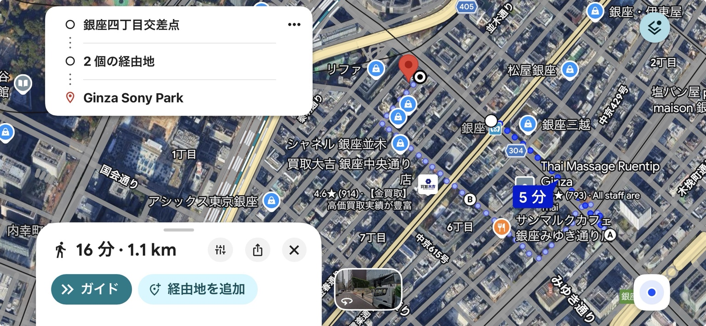

01 / 初めての方へ
こんな入力から始める
銀座4丁目交差点から、午後1時に出発します。 徒歩と立ち寄りを合わせて、2時間で楽しめる散策ルートを提案してください。 銀座らしい街並み、歴史や建築、休憩できる場所に興味があります。 訪問日は［年月日］です。 当日の営業時間・休館日・予約条件を公式情報で確認し、移動時間と滞在時間を含めて組み立ててください。 地図や実際の場所の写真も、表示できる範囲で添えてください。 確認できない情報は、その旨を明記してください。
入力文をコピー → ChatGPTを開く → 貼り付けて、訪問日や希望を変更。アプリがなくてもブラウザでご利用いただけます。自動で貼り付け・送信はされません。
実際の結果見本を見る
行程と表はChatGPTの回答例（抜粋）です。写真と地図は、現地の様子を伝えるためGINZA WHISKERS編集部が別途追加した参考素材で、ChatGPTの回答画面に表示されたものではありません。
写真をクリックすると拡大表示します（新しいタブで開きます）。
13:00〜15:00の散策プラン
訪問日：2026年11月7日（土）13:00〜15:00。和光→歌舞伎座→GINZA SIX屋上庭園→Ginza Sony Parkを巡るプランです。
画面幅によっては、表を横にスワイプして確認できます。
| 時刻 | 行程 | 楽しみ方 |
|---|---|---|
| 13:00〜13:10 | 銀座4丁目交差点・和光の時計塔 | 時計塔と曲線を描く石造りの外観を眺める |
| 13:10〜13:18 | 晴海通りを東へ徒歩8分 | 三越側から東銀座方面へ |
| 13:18〜13:33 | 歌舞伎座の外観見学 | 正面の大屋根や白い壁、街との対比を楽しむ。観劇・入館は含めない |
| 13:33〜13:45 | 三原橋交差点から三原通り方面へ、徒歩12分 | 中央通りとは違う街の表情を眺めながらGINZA SIXへ |
| 13:45〜13:55 | GINZA SIX入館・屋上へ移動 | エレベーター待ちを含めて10分確保 |
| 13:55〜14:20 | 屋上庭園で散策・休憩 | 空いているベンチでひと休み。飲み物を持参すると時間を使いやすい |
| 14:20〜14:30 | 地上へ移動 | トイレなどもこの時間に |
| 14:30〜14:45 | 中央通り・晴海通り経由で数寄屋橋へ | ショーウィンドーを眺めながら、ゆっくり歩く |
| 14:45〜15:00 | Ginza Sony Park | 建築と街に開かれた空間を楽しみ、ここで解散 |
編集部が追加した徒歩ルート地図

地図をクリックすると拡大表示します（新しいタブで開きます）。
合計120分。予約枠の空き、当日の営業や混雑、実際の所要時間を保証するものではありません。
行程・表は2026年11月7日訪問分としてChatGPTに相談した回答の抜粋です。写真（2026年11月11日撮影）と地図は、GINZA WHISKERS編集部が後から追加した参考素材です。実際のルートは、ご自身の条件でChatGPTに相談し、出発前に公式情報でも確認してください。